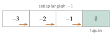

Bab 16
Belajar dari Ganjaran: Reinforcement Learning
Reinforcement learning datang kepada saya dalam dua tahap. Pada musim panas 2025, kuliah deep reinforcement learning langsung membawa kami ke imitation learning, policy gradient, dan credit assignment, dengan proyek latihan berupa agen DQN, agen PPO, dan sebuah tantangan akhir. Pada musim dingin berikutnya, kuliah reinforcement learning mengisi fondasinya secara rapi: proses keputusan Markov, dynamic programming, metode Monte Carlo, dan temporal difference. Bab ini menyusunnya dalam urutan yang lebih logis, fondasi dulu, lalu deep RL.
Dua tipe belajar di bab-bab sebelumnya selalu punya data yang sudah tersedia. Reinforcement learning berbeda. Agen harus mengumpulkan datanya sendiri dengan bertindak, dan umpan baliknya bukan jawaban yang benar, melainkan angka ganjaran yang sering datang terlambat. Seekor anjing yang belajar duduk tidak diberi tahu gerakan otot apa yang harus dilakukan. Ia mencoba sesuatu, dan kadang mendapat camilan. Tugasnya adalah mencari tahu tindakan mana yang membuat camilan itu datang.
Proses keputusan Markov
Kerangka formalnya adalah Markov decision process (MDP): himpunan keadaan \(\mathcal S\), himpunan aksi \(\mathcal A\), dinamika \(p(s',r\mid s,a)\) yang memberi peluang keadaan berikutnya dan ganjarannya, serta faktor diskon \(\gamma\in[0,1)\) (Sutton dan Barto 2018). Di setiap langkah, agen melihat keadaan \(s_t\), memilih aksi \(a_t\) menurut policy \(\pi(a\mid s)\), lalu menerima ganjaran \(r_{t+1}\) dan keadaan baru. Tujuannya memaksimalkan return, jumlah ganjaran yang didiskon, \[G_t=r_{t+1}+\gamma r_{t+2}+\gamma^2r_{t+3}+\cdots=\sum_{k=0}^\infty\gamma^kr_{t+k+1}.\] Faktor diskon membuat ganjaran yang jauh di masa depan bernilai lebih kecil, dan secara matematis menjaga jumlahnya tetap terhingga.
Seberapa baik berada di sebuah keadaan diukur oleh value function \(V^\pi(s)=\mathbb{E}_\pi[G_t\mid s_t=s]\), dan seberapa baik mengambil sebuah aksi di sebuah keadaan oleh action-value function \(Q^\pi(s,a)=\mathbb{E}_\pi[G_t\mid s_t=s,a_t=a]\). Kedua fungsi memenuhi persamaan rekursif yang menjadi jantung seluruh bidang ini, yaitu persamaan Bellman: \[V^\pi(s)=\sum_a\pi(a\mid s)\sum_{s',r}p(s',r\mid s,a)\big[r+\gamma V^\pi(s')\big].\] Nilai sebuah keadaan sama dengan ganjaran langsung ditambah nilai keadaan berikutnya yang didiskon, dirata-ratakan atas semua yang mungkin terjadi. Untuk policy terbaik, rata-rata atas aksi diganti dengan maksimum, dan kita mendapat persamaan Bellman optimal, \(V^*(s)=\max_a\sum_{s',r}p(s',r\mid s,a)[r+\gamma V^*(s')]\).
Persamaan ini turun langsung dari definisi return. Karena \(G_t=r_{t+1}+\gamma G_{t+1}\), ekspektasinya dari keadaan \(s\) adalah \(\mathbb{E}[r_{t+1}+\gamma G_{t+1}\mid s_t=s]\). Ekspektasi ini dihitung bertahap: pilih aksi menurut \(\pi\), dapatkan ganjaran dan keadaan berikutnya menurut \(p\), lalu ganti \(\mathbb{E}[G_{t+1}\mid s_{t+1}=s']\) dengan \(V^\pi(s')\) berkat sifat Markov, karena masa depan setelah \(s'\) tidak bergantung pada bagaimana kita sampai di sana.
Contoh paling kecil sudah memperlihatkan maknanya. Bayangkan satu keadaan dengan satu aksi yang selalu memberi ganjaran satu dan kembali ke keadaan yang sama. Persamaan Bellman menjadi \(V=1+\gamma V\), sehingga \(V=1/(1-\gamma)\). Dengan \(\gamma=0{,}9\), nilainya 10. Faktor diskon bisa dibaca sebagai cakrawala efektif: dengan \(\gamma=0{,}9\), agen kira-kira peduli pada sepuluh langkah ke depan.
Dynamic programming
Kalau dinamika MDP diketahui, persamaan Bellman bisa diselesaikan dengan dynamic programming (Bellman 1957). Policy evaluation menghitung \(V^\pi\) dengan menerapkan persamaan Bellman berulang-ulang sebagai aturan update sampai nilainya tidak berubah lagi. Karena faktor diskon membuat update ini kontraktif, iterasinya pasti konvergen. Policy improvement lalu membuat policy baru yang serakah terhadap \(V^\pi\), memilih di setiap keadaan aksi dengan nilai harapan tertinggi. Teorema perbaikan policy menjamin policy baru ini tidak lebih buruk dari yang lama. Bergantian antara keduanya disebut policy iteration, dan ia berakhir di policy optimal dalam jumlah langkah terhingga untuk MDP terhingga. Value iteration memadatkan keduanya dengan langsung menerapkan persamaan Bellman optimal sebagai update.
Kuliah memakai dunia grid kecil sebagai contoh. Agen bergerak di petak-petak, setiap langkah memberi ganjaran \(-1\), dan permainan berakhir di petak sudut. Setelah policy evaluation untuk policy acak, nilai setiap petak mencerminkan rata-rata jumlah langkah yang dibutuhkan untuk mencapai sudut dengan berjalan acak. Policy yang serakah terhadap nilai-nilai itu sudah langsung menunjuk jalur terpendek.
Value iteration bisa diikuti dengan tangan pada lorong empat petak (Gambar 16.1). Agen bisa melangkah ke kiri atau ke kanan, setiap langkah memberi \(-1\), petak paling kanan adalah tujuan dengan nilai nol, dan \(\gamma=1\). Mulai dari \(V=0\) di mana-mana. Setelah satu sapuan, setiap petak selain tujuan bernilai \(-1\), karena satu langkah apa pun memberi \(-1\) dan nilai petak tetangga masih nol. Setelah sapuan kedua, petak tepat di sebelah tujuan tetap \(-1\) (melangkah ke tujuan), sedangkan petak lain menjadi \(-2\). Setelah sapuan ketiga, nilainya \((-3,-2,-1,0)\), dan sapuan berikutnya tidak mengubah apa pun. Nilai setiap petak adalah minus jarak ke tujuan, dan policy serakah selalu melangkah ke kanan. Informasi menyebar mundur dari tujuan satu petak per sapuan, seperti gelombang. Pada MDP yang lebih besar, gelombang yang sama juga merambat, hanya lebih lama.

Belajar dari pengalaman
Di dunia nyata, dinamika jarang diketahui. Agen harus belajar dari sampel.
Metode Monte Carlo menunggu sampai satu episode selesai, lalu memakai return yang benar-benar diperoleh sebagai perkiraan nilai setiap keadaan yang dikunjungi. Perkiraan ini tak bias, tetapi variansnya besar, karena satu return bergantung pada semua keputusan acak sampai akhir episode. Kuliah memakai blackjack sebagai contoh: setelah ratusan ribu permainan acak dengan sebuah policy sederhana, rata-rata return dari setiap keadaan kartu menggambar permukaan nilai yang mulus, tanpa pernah menuliskan peluang kartu. Ada dua varian. First-visit hanya memakai return sejak kunjungan pertama ke sebuah keadaan dalam satu episode, every-visit memakai setiap kunjungan. Untuk episode \(s_1,s_2,s_1,\text{selesai}\) dengan ganjaran \(1\), \(0\), dan \(2\) dan \(\gamma=1\), return sejak kunjungan pertama ke \(s_1\) adalah \(3\) dan sejak kunjungan kedua \(2\). First-visit mencatat \(3\), every-visit mencatat \(3\) dan \(2\). Keduanya konvergen ke nilai yang benar. Rata-rata ini bisa diperbarui bertahap, \(V\leftarrow V+\tfrac1n(G-V)\), bentuk yang langsung menjadi model untuk TD di bawah dengan \(\tfrac1n\) diganti laju belajar tetap.
Metode temporal difference (TD) tidak menunggu. Setelah satu langkah, ia memperbarui perkiraan dengan memakai perkiraannya sendiri tentang keadaan berikutnya, \[V(s_t)\leftarrow V(s_t)+\alpha\big[r_{t+1}+\gamma V(s_{t+1})-V(s_t)\big].\] Selisih di dalam kurung disebut TD error. Pendekatan ini, belajar tebakan dari tebakan, disebut bootstrapping. Variansnya kecil karena hanya satu langkah acak yang terlibat, tetapi ada bias selama perkiraan \(V(s_{t+1})\) belum benar. Di antara keduanya terbentang metode \(n\)-langkah dan eligibility traces yang mencampur keduanya.
Bayangkan memperkirakan waktu perjalanan pulang dari kantor. Metode Monte Carlo menunggu sampai Anda tiba di rumah, lalu mencatat total waktunya. Metode TD memperbarui perkiraan di setiap persimpangan: “jalanan ternyata macet, perkiraan saya untuk sisa perjalanan harus naik”, tanpa menunggu tiba.
Untuk mengendalikan, bukan hanya menilai, kita mempelajari \(Q\). SARSA memperbarui \(Q(s,a)\) dengan aksi berikutnya yang benar-benar diambil, sehingga ia belajar nilai policy yang sedang dijalankan. Q-learning (Watkins dan Dayan 1992) memakai aksi terbaik di keadaan berikutnya, \[Q(s_t,a_t)\leftarrow Q(s_t,a_t)+\alpha\big[r_{t+1}+\gamma\max_{a'}Q(s_{t+1},a')-Q(s_t,a_t)\big],\] sehingga ia belajar nilai policy optimal sambil menjalankan policy lain yang lebih eksploratif. Perbedaan ini disebut on-policy dan off-policy.
Satu update dengan angka: misalkan \(Q(s,a)=2\), agen menerima \(r=1\), dan di keadaan berikutnya nilai aksi terbaik \(\max_{a'}Q(s',a')=5\). Dengan \(\gamma=0{,}9\) dan \(\alpha=0{,}1\), targetnya \(1+0{,}9\cdot5=5{,}5\), TD error-nya \(3{,}5\), dan \(Q(s,a)\) naik menjadi \(2{,}35\). Langkah kecil ke arah target, persis seperti SGD dengan target yang diambil dari perkiraan sendiri.
Perbedaan on-policy dan off-policy terlihat jelas pada contoh klasik Sutton dan Barto (2018), berjalan di tepi tebing. Jalur terpendek menyusuri tepi tebing, dan setiap langkah yang jatuh ke tebing memberi hukuman besar. Dengan eksplorasi \(\epsilon\)-greedy, sesekali agen melangkah acak. Q-learning mempelajari nilai policy optimal yang tidak pernah salah langkah, sehingga ia memilih jalur di tepi tebing, lalu sesekali jatuh karena eksplorasinya. SARSA mempelajari nilai policy yang benar-benar dijalankan, termasuk langkah acaknya, sehingga ia memilih jalur yang lebih jauh dari tepi dan jarang jatuh. Selama eksplorasi masih berjalan, SARSA mendapat ganjaran rata-rata yang lebih baik. Kalau \(\epsilon\) diturunkan ke nol, keduanya bertemu di jalur optimal.
Di sini muncul dilema yang tidak dikenal di supervised learning: exploration melawan exploitation. Kalau agen selalu memilih aksi yang sejauh ini terbaik, ia mungkin tidak pernah menemukan aksi yang sebenarnya lebih baik. Kalau ia terus mencoba hal baru, ia membuang ganjaran. Strategi paling sederhana adalah \(\epsilon\)-greedy: pilih aksi terbaik hampir selalu, tetapi dengan peluang kecil \(\epsilon\) pilih aksi acak. Ini mirip memilih tempat makan. Kalau selalu ke warung langganan, kita tidak pernah tahu ada warung yang lebih enak di gang sebelah.
Deep Q-network
Untuk keadaan yang amat banyak, seperti piksel layar permainan, tabel \(Q\) diganti jaringan saraf \(Q_\theta(s,a)\). Gabungan ini ternyata tidak stabil, karena data yang dikumpulkan berurutan sangat berkorelasi dan targetnya terus berubah seiring jaringannya sendiri berubah. DQN (Mnih dkk. 2015) memperbaikinya dengan dua trik. Experience replay menyimpan pengalaman di sebuah buffer dan melatih jaringan dengan mini-batch acak dari buffer itu, sehingga korelasi terputus. Target network adalah salinan jaringan yang diperbarui jarang-jarang dan dipakai untuk menghitung target, sehingga target tidak bergeser di setiap langkah. Dengan dua trik ini, satu arsitektur yang sama belajar memainkan puluhan permainan Atari dari piksel. Operator maksimum dalam target Q-learning cenderung melebih-lebihkan nilai. Alasannya statistik: kalau sepuluh aksi sebenarnya bernilai sama, tetapi perkiraannya berisik, maksimum dari sepuluh perkiraan berisik hampir selalu lebih besar dari nilai sebenarnya. Double DQN memisahkan pemilihan aksi dari penilaiannya: jaringan utama memilih aksi terbaik, \(a^*=\operatorname*{arg\,max}_{a'}Q_\theta(s',a')\), dan jaringan target menilai aksi itu, \(Q_{\theta^-}(s',a^*)\). Karena noise kedua jaringan tidak sama, bias ke atas itu sebagian besar hilang.
Policy gradient
Pendekatan lain melewati fungsi nilai dan langsung mengoptimalkan policy berparameter \(\pi_\theta(a\mid s)\). Teorema policy gradient memberi gradien return harapan \(J(\theta)\) dalam bentuk yang bisa diperkirakan dari sampel, \[\nabla_\theta J(\theta)=\mathbb{E}_{\pi_\theta}\Big[\sum_t\nabla_\theta\log\pi_\theta(a_t\mid s_t)\,G_t\Big].\] Kuncinya adalah log-derivative trick. Untuk satu lintasan \(\tau\) dengan peluang \(p_\theta(\tau)\) dan return \(G(\tau)\), gradien return harapan adalah \[\nabla_\theta\int p_\theta(\tau)G(\tau)\,\mathrm{d}\tau=\int p_\theta(\tau)\,\nabla_\theta\log p_\theta(\tau)\,G(\tau)\,\mathrm{d}\tau,\] karena \(\nabla p=p\,\nabla\log p\). Bentuk kedua adalah sebuah ekspektasi, sehingga bisa diperkirakan dengan merata-ratakan atas lintasan yang dijalankan. Peluang lintasan adalah hasil kali peluang aksi dari policy dan peluang transisi dari lingkungan. Setelah logaritma diambil, hasil kali itu menjadi jumlah, dan suku-suku transisi lingkungan tidak bergantung pada \(\theta\), sehingga hilang saat diturunkan. Yang tersisa hanya \(\sum_t\nabla_\theta\log\pi_\theta(a_t\mid s_t)\). Inilah alasan policy gradient bisa dipakai tanpa model lingkungan sama sekali. Mengganti \(G(\tau)\) dengan return sejak langkah \(t\) saja diperbolehkan, karena aksi di langkah \(t\) tidak bisa memengaruhi ganjaran yang sudah diterima sebelumnya.
Algoritme REINFORCE (Williams 1992) memakai rumus ini langsung: naikkan peluang aksi yang diikuti return tinggi, turunkan peluang aksi yang diikuti return rendah. Estimasi ini tak bias, tetapi variansnya besar. Mengurangkan sebuah baseline yang tidak bergantung pada aksi, biasanya perkiraan \(V(s_t)\), tidak mengubah ekspektasinya tetapi mengurangi variansnya. Selisih \(A_t=G_t-V(s_t)\) disebut advantage: seberapa jauh aksi ini lebih baik daripada rata-rata. Metode actor-critic melatih dua jaringan sekaligus, aktor yang memilih aksi dan kritikus yang menaksir nilai (Mnih dkk. 2016), dan generalized advantage estimation (Schulman, Moritz, dkk. 2015) mencampur perkiraan advantage dari berbagai panjang langkah untuk mengatur keseimbangan bias dan varians.
Policy gradient punya kelemahan praktis: satu langkah yang terlalu besar bisa merusak policy, dan data baru yang dikumpulkan dengan policy rusak itu ikut buruk, sehingga pelatihan bisa runtuh. TRPO (Schulman, Levine, dkk. 2015) membatasi setiap update agar policy baru tidak terlalu jauh dari yang lama dalam arti divergensi KL. PPO (Schulman dkk. 2017) mencapai efek serupa dengan cara yang jauh lebih sederhana, yaitu memotong rasio peluang \(\rho_t=\pi_\theta(a_t\mid s_t)/\pi_{\theta_{\mathrm{lama}}}(a_t\mid s_t)\): \[L^{\mathrm{CLIP}}(\theta)=\mathbb{E}_t\Big[\min\big(\rho_tA_t,\ \mathrm{clip}(\rho_t,1-\epsilon,1+\epsilon)A_t\big)\Big].\] Kalau sebuah aksi bagus (\(A_t>0\)), peluangnya boleh naik, tetapi tidak lebih dari faktor \(1+\epsilon\) dalam satu update. Kalau aksi buruk, peluangnya boleh turun, tetapi tidak lebih dari faktor \(1-\epsilon\). Contoh dengan angka: dengan \(\epsilon=0{,}2\) dan advantage \(A_t=2\), kalau policy baru menaikkan peluang aksi itu menjadi \(1{,}5\) kali, suku pertama memberi \(3\), tetapi suku yang dipotong memberi \(1{,}2\cdot2=2{,}4\), dan minimum keduanya, \(2{,}4\), yang dipakai. Gradien terhadap \(\rho_t\) di daerah itu nol, sehingga tidak ada dorongan untuk menaikkan peluangnya lebih jauh dalam update yang sama. PPO menjadi algoritme bawaan di banyak aplikasi karena kuat dan mudah disetel. Untuk aksi kontinu, soft actor-critic (Haarnoja dkk. 2018) menambahkan entropi policy ke dalam tujuan, sehingga agen dihargai karena tetap acak selama hal itu tidak terlalu merugikan.
Meniru dan memberi kredit
Imitation learning
Kadang lebih mudah menunjukkan cara melakukan sesuatu daripada menulis fungsi ganjarannya. Behavioral cloning memperlakukan demonstrasi ahli sebagai data supervised: input keadaan, target aksi. Masalahnya adalah covariate shift. Begitu agen sedikit menyimpang dari jalur ahli, ia sampai di keadaan yang tidak pernah dilihat ahli, membuat kesalahan lebih besar, dan menyimpang semakin jauh. DAgger (Ross, Gordon, dan Bagnell 2010) mengatasinya dengan menjalankan policy agen, meminta ahli memberi label pada keadaan yang dikunjungi agen, lalu melatih ulang. Pendekatan lain mempelajari fungsi ganjaran dari demonstrasi (inverse reinforcement learning), atau mempertandingkan agen dengan diskriminator yang membedakan perilakunya dari perilaku ahli, seperti pada GAIL (Ho dan Ermon 2016).
Credit assignment
Masalah tersulit RL adalah ganjaran yang tertunda. Dalam sebuah pertandingan sepak bola, gol terjadi di menit ke-80, tetapi umpan yang menentukan mungkin terjadi lima menit sebelumnya, dan kesalahan lawan yang membuka ruang mungkin terjadi lebih awal lagi. Metode TD menyebarkan kredit mundur satu langkah demi satu langkah, sehingga untuk penundaan panjang, belajarnya lambat sekali. RUDDER (Arjona-Medina dkk. 2018), yang dikembangkan di Linz, mengambil pendekatan berbeda. Sebuah LSTM dilatih untuk memprediksi return total dari seluruh urutan keadaan dan aksi. Lalu, dengan menganalisis seberapa besar setiap langkah mengubah prediksi itu, return dibagi ulang ke langkah-langkah yang benar-benar berkontribusi. Ganjaran yang tertunda diubah menjadi ganjaran langsung, dan nilai harapan yang tersisa untuk dipelajari menjadi hampir nol. Kuliah deep RL di Linz membahas topik ini dengan nama direct credit assignment.
Kendali sebagai inferensi
Kuliah juga membahas cara pandang yang menyatukan RL dengan inferensi probabilistik (Bab 14). Kalau kita memperkenalkan variabel “optimalitas” yang peluangnya sebanding dengan eksponensial ganjaran, mencari policy optimal menjadi mirip menghitung posterior atas lintasan, dengan syarat bahwa lintasan itu optimal. Hasil dari cara pandang ini adalah RL dengan entropi maksimum, yang menjelaskan mengapa soft actor-critic menambahkan entropi ke dalam tujuannya.
Model, permainan, dan banyak agen
Buku Plaat (2022), yang menjadi bacaan kuliah, menyusun deep RL menjadi beberapa keluarga. Setiap keluarga menjawab satu kelemahan metode model-free yang dibahas di atas.
Belajar dengan model
Metode model-free butuh interaksi yang amat banyak. DQN memainkan setiap permainan Atari puluhan juta langkah. Metode berbasis model mempelajari dinamika lingkungan, \(\hat p(s',r\mid s,a)\), lalu memakai model itu untuk merencanakan atau untuk menghasilkan pengalaman buatan. Arsitektur Dyna (Sutton 1990) adalah contoh paling sederhana. Setiap langkah nyata dipakai dua kali: sekali untuk memperbarui \(Q\) seperti biasa, dan sekali untuk memperbarui model. Lalu, sebelum langkah nyata berikutnya, agen melakukan beberapa pembaruan \(Q\) tambahan dengan pengalaman yang dibangkitkan model dari keadaan yang pernah dikunjungi. Kalau sepuluh langkah khayalan dilakukan untuk setiap langkah nyata, informasi dari satu interaksi menyebar jauh lebih cepat ke seluruh tabel nilai.
Bahayanya adalah galat model. Policy yang dioptimalkan di dalam model yang keliru akan mengeksploitasi kekeliruan itu, persis seperti optimasi molekul yang mengeksploitasi celah model QSAR (Bab 23). Galat juga menumpuk sepanjang rencana yang panjang, masalah rollout yang sama dengan Bab 30. Karena itu metode modern biasanya merencanakan hanya beberapa langkah ke depan, memakai ensemble model untuk menaksir ketidakpastiannya, atau seperti MuZero, mempelajari model yang hanya meramalkan besaran yang dibutuhkan untuk merencanakan, yaitu nilai, policy, dan ganjaran, bukan seluruh pengamatan.
Banyak agen
Ketika beberapa agen belajar bersamaan, lingkungan setiap agen berubah karena agen lain juga berubah, dan jaminan konvergensi dari MDP tunggal hilang. Teori permainan memberi bahasa untuk situasi ini. Sebuah Nash equilibrium adalah kombinasi strategi di mana tidak ada pemain yang bisa untung dengan mengubah strateginya sendiri sementara yang lain tetap.
Batu-gunting-kertas memperlihatkan mengapa strategi acak bisa optimal. Misalkan lawan memainkan batu, gunting, dan kertas dengan peluang \(p_b\), \(p_g\), dan \(p_k\), dengan menang bernilai \(+1\), kalah \(-1\), dan seri \(0\). Nilai harapan memainkan batu adalah \(p_g-p_k\), gunting \(p_k-p_b\), dan kertas \(p_b-p_g\). Kalau salah satu nilai ini positif, kita akan selalu memainkan aksi itu, dan lawan bisa mengeksploitasinya. Satu-satunya keadaan di mana tidak ada aksi yang lebih unggul adalah ketika ketiganya nol, yaitu \(p_b=p_g=p_k=\tfrac13\). Ekuilibriumnya adalah bermain acak sempurna. Dalam permainan seperti ini, self-play yang naif bisa berputar-putar tanpa henti: agen belajar mengalahkan versi lamanya, lalu versi berikutnya belajar mengalahkan versi itu, dan seterusnya. Karena itu sistem seperti AlphaZero (Silver dkk. 2018) dan agen permainan strategi modern melatih agen melawan kumpulan versi-versi lamanya, bukan hanya versi terakhir.
Hierarki, meta-learning, dan eksplorasi
Tugas yang panjang, seperti memasak sebuah resep, lebih mudah dipelajari kalau dipecah menjadi subtugas: ambil bahan, potong, panaskan. Kerangka options (Sutton, Precup, dan Singh 1999) memperlakukan subtugas seperti itu sebagai aksi yang diperluas dalam waktu, masing-masing dengan policy dan syarat berhentinya sendiri. Policy tingkat tinggi memilih option, policy tingkat rendah menjalankannya. Credit assignment menjadi lebih mudah, karena keputusan tingkat tinggi lebih sedikit dan berjarak lebih dekat dengan ganjarannya.
Meta-learning bertanya bagaimana agen bisa cepat beradaptasi ke tugas baru. MAML (Finn, Abbeel, dan Levine 2017) mencari parameter awal \(\theta\) yang, setelah satu atau beberapa langkah gradien pada tugas baru, sudah bekerja baik di tugas itu. Untuk setiap tugas \(i\), parameter yang sudah disesuaikan adalah \(\theta_i'=\theta-\alpha\nabla_\theta\mathcal{L}_i(\theta)\), dan parameter awal diperbarui untuk meminimalkan \(\sum_i\mathcal{L}_i(\theta_i')\), yaitu loss setelah adaptasi. Yang dicari bukan parameter yang baik untuk semua tugas sekaligus, melainkan titik awal yang dekat ke solusi setiap tugas. Gagasan ini berlaku di luar RL, misalnya untuk klasifikasi dengan sedikit contoh.
Eksplorasi yang cerdas menjadi penting ketika ganjaran jarang sekali. Bonus eksplorasi berbasis hitungan menambahkan ganjaran buatan \(\beta/\sqrt{N(s)}\) untuk keadaan yang baru dikunjungi \(N(s)\) kali, gagasan yang sama dengan bonus keingintahuan pada UCT di Bab 5. Untuk keadaan berupa piksel, setiap layar praktis unik, sehingga hitungan langsung tidak berguna. Bellemare dkk. (2016) menurunkan “hitungan semu” dari sebuah model kerapatan atas keadaan, dan memperlihatkan bahwa bonus seperti ini membuat agen menjelajahi permainan Atari yang ganjarannya jarang jauh lebih baik.
Reinforcement learning di dunia nyata
Di luar permainan, RL dipakai untuk masalah kendali yang sulit dimodelkan secara analitis. Rabault dkk. (2019) melatih agen untuk mengendalikan jet kecil di permukaan silinder dalam simulasi CFD, dan agen itu menemukan strategi yang mengurangi gaya hambat. Ulasan Garnier dkk. (2021) merangkum puluhan studi serupa dalam mekanika fluida, dari kendali aliran sampai optimasi bentuk. Dalam robotika, agen dilatih di simulator lalu dipindahkan ke robot nyata. Dalam sistem rekomendasi, memilih item yang ditampilkan kepada pengguna bisa dirumuskan sebagai masalah keputusan berurutan.
Penerapan yang paling berpengaruh beberapa tahun terakhir justru datang dari bahasa. Model bahasa yang sudah dilatih kemudian disetel dengan reinforcement learning from human feedback. Manusia membandingkan pasangan jawaban model, sebuah model ganjaran dilatih dari preferensi itu (Christiano dkk. 2017), lalu model bahasa dioptimasi dengan PPO terhadap model ganjaran tersebut (Ouyang dkk. 2022). Perkembangan ini kita bahas lagi di Bab 38.
Perkembangan riset
Dua arah riset yang menonjol beberapa tahun terakhir menyentuh dua pertanyaan besar bab ini: dari mana data datang, dan bagaimana memakai model. DreamerV3 (Hafner dkk. 2023) mempelajari model dunia dari pengalaman, lalu memperbaiki perilakunya dengan membayangkan skenario masa depan di dalam model itu. Dengan teknik normalisasi dan transformasi yang membuat skala ganjaran dan nilai tidak lagi perlu disetel per tugas, satu konfigurasi yang sama bekerja di lebih dari 150 tugas, dan untuk pertama kalinya sebuah algoritme mengumpulkan berlian di Minecraft dari nol tanpa data manusia atau kurikulum.
Decision Transformer (Chen dkk. 2021) membuang fungsi nilai dan policy gradient sama sekali. Untuk data yang sudah terkumpul (offline RL), setiap lintasan ditulis sebagai deret token berisi return yang tersisa, keadaan, dan aksi. Transformer dengan causal mask dilatih menebak aksi berikutnya. Saat dipakai, kita cukup memasukkan return yang diinginkan sebagai token pertama, dan model membangkitkan aksi yang konsisten dengan target itu. Reinforcement learning berubah menjadi pemodelan deret bersyarat, dan seluruh perkakas model bahasa dari Bab 9 bisa dipakai. Pendekatan ini juga menjadi jembatan ke cara model bahasa besar dilatih dengan RL di Bab 38.
Catatan sumber.
Bab ini menggabungkan kuliah Reinforcement Learning (MDP, dynamic programming, Monte Carlo, temporal difference, policy gradient, PPO) dan kuliah serta latihan Deep Reinforcement Learning (imitation learning, policy gradient, direct credit assignment, kendali dan inferensi, proyek DQN dan PPO). Bacaan utama: Sutton dan Barto (2018) dan Plaat (2022).